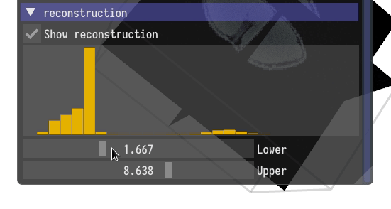

User Interface
Here we discuss the user interface of RECAST3D. We assume that there is a scene active, and that there is an active reconstruction server with non-zero projection data.
Menu bar
In the Scenes tab of the menu bar, all the current scenes are listed. Additional scenes can be added, or scenes can be deleted from this tab.

Note that scenes are often created automatically, using an upstream server such as SliceRecon.
Scene controls
On the left, there is a window with controls for the scene.
Color scheme
A color scheme can be chosen with a picker interface.

Fixed camera angles
You can set the camera in the scene to fixed angles, for example by focusing on one of the three standard orthoslices.

You can always reset the camera to the default position using the spacebar.
Axes
You can toggle the visibility of the axes indicator.

In the axis indicator; red, green, and blue represent the x, y, and z axis respectively.
Contrast
You can change the contrast in the scene using the min/max sliders at the bottom of the window. It also shows a histogram of the reconstruction data.

Camera and slice controls
Zooming
You can zoom in, and out, using the scroll wheel on your mouse.

Rotating the camera
Rotating the camera around the object can be done by pressing the left mouse button while not hovering over a slice, and dragging the mouse.

Changing a slice
You can translate a slice by pressing the left mouse button while hovering over a slice, and dragging the mouse. This will translate the slice along its normal.

Changing the orientation of a slice
You can rotate a slice around one of its edges, by pressing the right mouse button while hovering over a slice. It will rotate around the furthest edge from where you click.